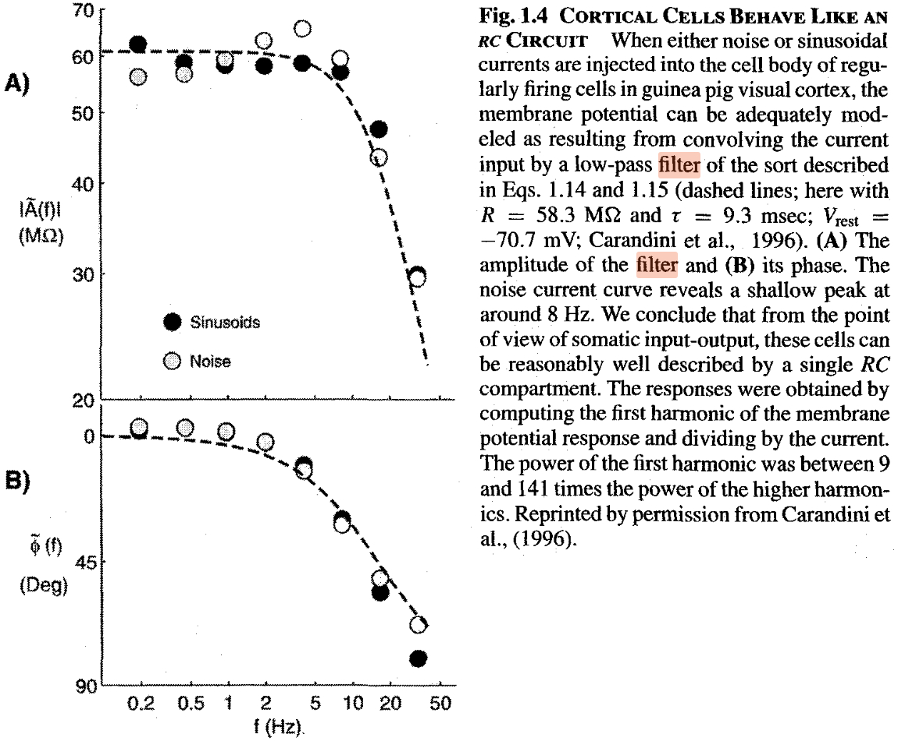

The fallacy that in the neuronal circuit the elements are switched in parallel, implies the commonly used fallacy that a biological neuron is a low-pass filter. A neuron can be represented as a differentiator-type oscillator belonging to high-pass filters in the world of instant interaction of electronics. However, neurophysiology sticks to assuming that ’the cell membrane composed of a resistance and a capacitance in parallel (RC circuit)’ and it should show the signs of a Low-Pass Filter. The experimental work [154] (their figure is reproduced in Fig. 4.6) ’demonstrated’ experimentally the ’low-pass’ behavior of their neuron. It shows an example when one proves ’experimentally’ what they want to believe. Likely Feynman’s warning was forgotten: ”The first principle is that you must not fool yourself – and you are the easiest person to fool.”
The fundamental issue with evaluating their data is misunderstanding of the neuron’s function. A neuron does not pass signals: it receives ones and produces new signals. Furthermore, the physiological notions are interpreted for a ’steady state’, i.e., using alternating current invalidates their basic assumptions. It is senseless to check its signal-passing feature: it is a wrong question to nature. The statement is valid for other measurements using alternating currents, too. According to [94], page 22, ”Also included are determined using sinusoidally varying voltage and pressure. This kind of experiment gives values of which are frequency dependent. However, the values approach a constant value·at sufficiently low frequency.”

Any foreign input current into the membrane, whether it is noise or a sine signal, increases the momentary and the average resting potential of the membrane, that is, decreases the probability that the synaptic trigger arrives at a moment when the synaptic input is enabled. For how synaptic inputs are enable in function of artificial currents, see our Figure 3.15. The arrival time of the spike from the presynaptic neuron is independent from the operation of the postsynaptic neuron, so the signals arrive at a ’random time’ in the neuron’s local time system. With increasing the frequency of that foreign signal, more input charge increases the membrane’s voltage. The longer the membrane voltage is above its threshold potential, the less is the chance to re-open the neuron’s synaptic inputs, i.e., to receive inputs from the ’regularly firing cell’: the triggers arrive with a high probability in the absolute refractory period. In the case of varying frequencies, this effect, combined with the finite ion current speed, makes the measured firing rate unpredictable. In a later research, it was noticed that [148] the too high current blocks spiking (more precisely, receiving the triggering signal).
From our conceptual model of generating AP (see Fig. 1.6), it is immediately clear that although in the ’native mode’ of operation, the falling edge of the AP would result in the membrane’s voltage falling below the threshold, in this way re-enabling synaptic inputs. However, in ’artificial’ mode, the foreign current can keep the voltage above the threshold (for shorter or longer periods, additionally), so the synaptic signal cannot enter the membrane, given that in periods when the membrane has potential value above the threshold, the synaptic inputs are not enabled; see also Figure 3.15. The synaptic inputs are re-enabled only later when the membrane’s potential is under the threshold potential when a new synaptic trigger arrives. That is, the triggering effect of the ”regularly firing cells” is suppressed by the artificially increased neuronal membrane voltage. The effect has nothing to do with the effect ’Low-Pass Filter’. See also section 2.5.